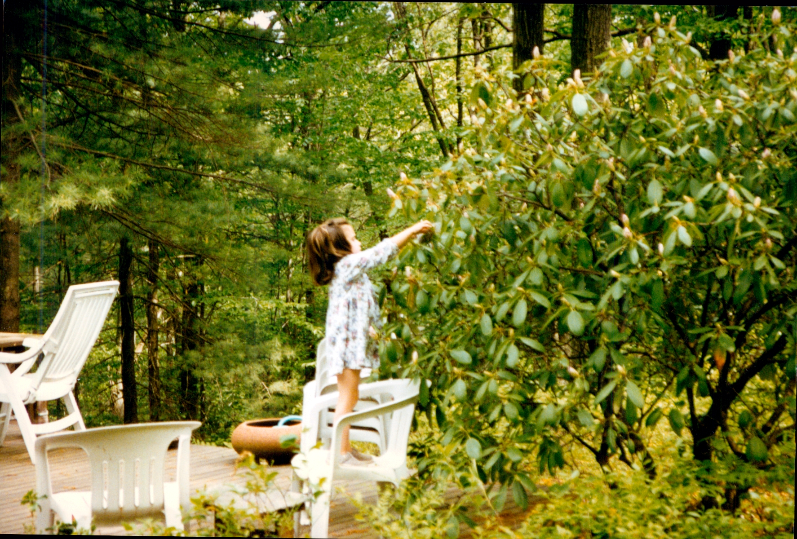
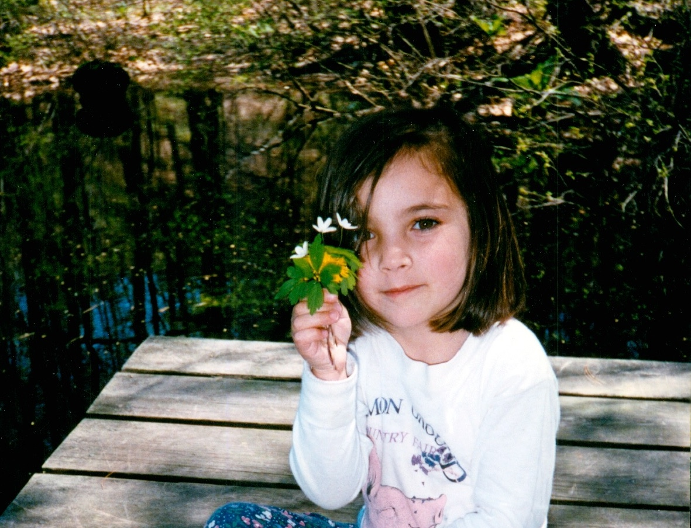
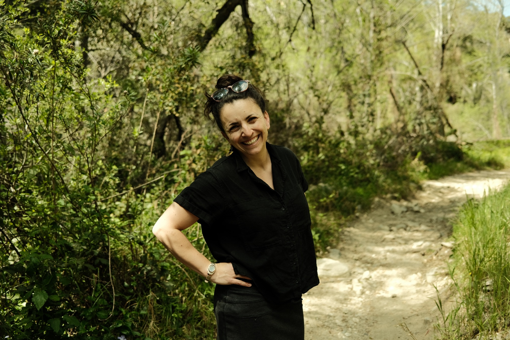

From a childhood steeped in two generations of gardening,
to a decade spent coding and leading engineering teams,
to now — returning to the garden, professionally.
Gemma grew up with dirt under her fingernails. Her grandfather's garden wound through the woods with paths and fish ponds and more plant varieties than she could name. Her father's garden was stunning as well — with stone walls, brick patios, and fountains all built by him, and beds overflowing with flowers. She had a small plot within her father's garden to tend however she liked. Her first jobs were weeding, paid by the hour, and she frequently was making flower arrangements to show off the garden inside.


After college, Gemma built a career as a senior software engineer and engineering manager, while tending to plants in her free time. During this time, most of which was spent working at Spotify, she led teams of up to sixteen engineers and shipped products used by hundreds of millions of people. She managed complex, cross-functional projects from inception through launch, drove strategy, and delivered under real stakes. Following the purchase of her East Arlington home in 2018, Gemma's plant hobby intensified, as she transformed the 6k square feet of lawn surrounding her house into a small urban oasis — a green space bursting with life, biodiversity, and edible perennials, and serving as a container for community events and art. She was good at her job in tech — but it was never where she felt most alive.
She woke up those mornings buzzing. She felt competent, grounded, and genuinely proud of the work.
In 2026, Gemma left her tech career intentionally — not because it wasn't going well, but because she wanted to find work that felt more like her. She suspected landscape design and fine gardening might be it. To test that theory, she took on her first client project that spring: transforming a difficult post-tree-stump site in Arlington into a layered perennial garden, complete with a fieldstone retaining wall she built herself. She woke up those mornings buzzing. She felt competent, grounded, and genuinely proud of the work.

Gemma's taking the leap into landscape design deliberately and with both eyes open — bringing the project management skills and attention to detail of a tech career into the craft of landscape design and fine gardening. Her particular focus is on edible perennials integrated into ornamental gardens, native plants, and spaces that feel abundant and alive rather than manicured and static.
Gemma lives in East Arlington with her family, where her garden — the thing she's most proud of having made — is always a work in progress.
Please get in touch if you are interested in discussing a project.